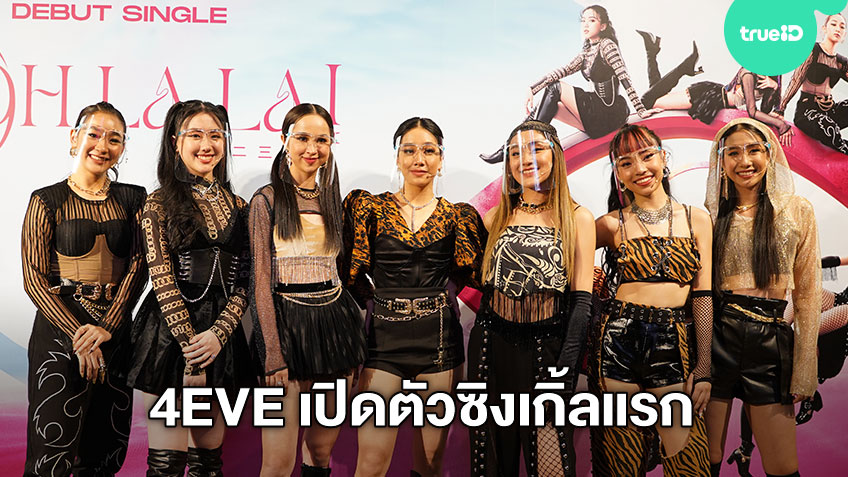

เปิดตัวครั้งแรก
เปิดตัวอย่างเป็นทางการด้วยซิงเกิลแรกคือ อูห์ลาล่า!(Oohlala!) เมื่อวันที่ 23 ธันวาคม พ.ศ.2563 และมีอัลบั้มแรกคือ เดอะเฟิสต์อัลบั้ม (The First Album) โดยเพลงวัดป่ะหล่ะ? ขึ้น 10 อันดับแรกของ Spotify Thailand Charts แต่อย่างไรก็ตามวงยังไม่มีการแสดงสดใดๆ เนื่องจากอยู่ในช่วงระบาดของไวรัสโคโรน่าโควิด 19จากนั้นในวันที่ 8 พฤษภาคม พ.ศ. 2565 ต้นสังกัดได้เริ่มทยอยปล่อยเพลงใหม่ในสตูดิโออัลบั้มเต็มชุดที่ 2 ทีละเพลงตั้งแต่ปลายเดือนพฤษภาคม จนครบอัลบั้ม โดยเริ่มต้นตั้งแต่วันที่ 16 พฤษภาคม ได้ประกาศซิงเกิลแรกคือเพลง "ข้อยกเว้น" ต่อมาในวันที่ 4 กรกฎาคม ได้ประกาศชื่อเพลงซิงเกิลที่ 2 คือเพลง "Boutchya" ซึ่งมีเนื้อเพลงเป็นภาษาอังกฤษล้วน และวันที่ 11 สิงหาคม ได้ประกาศเผยแพร่เพลงและมิวสิควิดีโอซิงเกิลที่ 3 ในอัลบั้มชุดใหม่คือเพลง "สิ่งเล็กน้อย"
คอนเสิร์ตวงครั้งแรก
วันที่ 2 กันยายน ทางวงได้ประกาศซิงเกิลที่ 4 ในอัลบั้มชุดใหม่คือเพลง "Jackpot" พร้อมประกาศจัดคอนเสิร์ตครั้งแรกในชื่อ "4EVE THE 1st CONCERT FRIENDS & FAMILY" ที่จะจัดขึ้นในวันที่ 17 และ 18 ธันวาคม ปีเดียวกัน ณ ศูนย์การประชุมแห่งชาติสิริกิติ์ โดยมีวงแอทลาส เป็นแขกรับเชิญ
คอนเสิร์ตวงครั้งที่สอง
วันที่ 9 ธันวาคม 2566 ได้มีการประกาศคอนเสิร์ตใหญ่ครั้งที่ 2 ของวง โดยใช้ชื่อว่า 4EVE Concert NOW OR NEVER Live at Impact Arena จัดขึ้นในวันเสาร์ที่ 10 กุมภาพันธ์ 2567 ณ อิมแพ็ค อารีน่า เมืองทองธานี โดยมีแขกรับเชิญพิเศษ ได้แก่ ยัวร์บอยทีเจ อิงค์ วรันธร ไททศมิตร และโอ๊ตปราโมทย์

ช่องทางการติดตาม
youtube : 4EVE